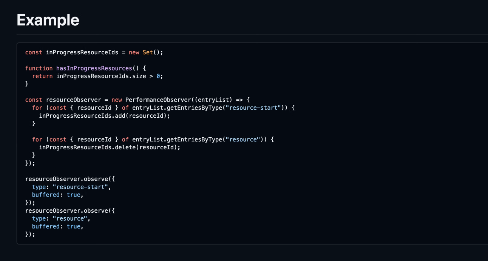

Participants
- Yoav Weiss, Nic Jansma, Alex Christensen, Barry Pollard, Franco Vieira de Souza, Guohui Deng, José Dapena Paz, Matt Kubej, Noam Helfman, Noam Rosenthal, Giacomo Zecchini, Patrick Meenan, Sergey Chernyshev, Philip Tellis, Michal Mocny, Scott Haseley, Neil Craig, Bas Schouten, Nazim Can Altinova, Mikey Gough
Admin
- Barry: “no change in scope” seems lacking
- Yoav: We’ll verify it’s updated
- Nic: Will update and merge in https://github.com/w3c/web-performance/pull/67
- Container Timing - WG adoption
- Yoav: Confirmation from multiple parties to go ahead with CfC for adopting Container Timing
- Bas: Landed Firefox implementation today
- Yoav: I’ll send out a CfC next week
- No longer in Early Registration
- Hotel available
- Nic: We’ll create a TPAC Agenda doc for this year
Minutes
- Yoav: We (Shopify) are using Early Hints
- … Seen weird results with ResourceTiming
- … Timing was when Early Hint download happened, so made it difficult to make sense of it
- Barry: There are two requests for Early Hint, then a second one for the document that picks up cached version of preloaded resource from cache
- … Only one ResourceTiming entry, a bit of a mix of both
- … Document’s request, but it is patched that it says it comes from early-hint
- … Timing is from Document timing rather than when the resource was fetched across the wire
- … No idea original timings
- … Only know that it was in the preload cache
- Noam: Was this encountered in Blink or all browsers?
- Barry: Also seen in Firefox but not in Safari (not implemented)
- Bas: That’s what I would expect
- Noam: Spec is a bit lying as far as implementation goes (inconsistent)
- … In the standard, we have a preload fetch, and preload consume, two distinct fetches and RT entries with different initiators
- … Currently no browser implements the spec
- Barry: We used to not get any visibility into EH was used, only see that it was cached
- … Then we put in early-hint initiatorType
- … Better than nothing, but a bit of a hack
- Yoav: Regardless of Early Hints, we had the same problem with regular preloads
- … I would expect Early Hints to be similar to preloads, if we have a case for two entries in EH, we do for preloads, then same for both
- Barry: Slightly different, when preload it’s in document in that case, but link rel=preload in header you may not have document
- Bas: Encounters rel=preload, fetches into cache, when it’s used there’s a second fetch that gets it from the cache
- … What’s different with EH case?
- Noam: In EH you get consume entry, in preload you get first entry
- Bas: May be a difference in Firefox
- Barry: EH uses HTTP cache
- Bas: Thought rel=preload cache was the same thing
- Barry: IMGs spec’d to use memory cache, preload isn’t but still does
- Yoav: Then you get the first (and only) fetch for IMGs
- … For EH, it’s specified for them to have two distinct fetches, same for preloads
- … Did we define preload cache in HTML?
- Noam: Yes
- … We can undefine some of it to reflect how it’s implemented today
- Yoav: Or define EH to be like regular preload cache
- … Fact that document doesn’t exist is a spec implementation detail
- Noam: When document is created, we send timing data to it
- … Medium complexity to change spec impl
- Yoav: Main use-case I see for EH having two separate RT entries, is if someone wanted to know both original initiator and consuming initiator
- Bas: Timing?
- Yoav: Timing for consumption, yes
- … Preloads having a “used” timestamp, if we had 2 RT entries we wouldn’t need that
- Barry: RT (and developers) handles duplicate entries terribly
- … Most people just take the first one, it’s messy when you have duplicates
- Noam: Cache State should say preload-consume, cleaner than adding a used timestamp, queued from observers when?
- … Having duplicate entries and cacheState would be cleaner
- … Always kind of fuzzy with what RT entry means
- … Any time you fetch you get a RT entry cleaned up the fuzziness
- … Developers may have issues, but we can help
- Yoav: Somewhat related to Matt’s proposal, if we are to start having multiple entries per resource, we need a Resource ID that helps developers do that linking, and a way for PO to get all entries for an ID, triggers entries for EH preload, consumption, etc
- Michal: For leveraging PT, EventTiming has an ID, Navigation has an ID, Paint Timings for animated images, you have the first paint of any contentfulness at all for FCP, first full-frame and fully-loaded, multiple paint entries linked together
- … Come up before
- Bas: Wonder how having timing, if there are any privacy/security concerns of getting pre-document-existence fetch, but maybe no more than getting it in document itself
- Noam: Not different from other things you need in NavTiming
- Bas: EH followed by redirect? 302
- Noam: It would have a redirectStart and fetchStart
- … If I remember correctly, those would be ignored (cross-origin)
- Nic: I can imagine some CDN that has Early Hint support would like to have separate entries for the early hint and the consumption point, to understand the EH effectiveness. So there’s appetite for two entries
- Bas: At least in FF at the moment all early hints does is warm the cache, and there’s no relationship between the two and I struggle to see the relationship
- Barry: but you set the initiator to early hints
- Bas: Sure, but if you want to a different document and loaded the same thing,it may be the same
- NoamR: Not spec compliant. Also the preload cache doesn’t respect HTTP headers.
- Barry: Pretty sure it’s using the regular HTTP cache
- Bas: Suspect that a separate document would also claim an “early-hints” initiator
- Barry: I don’t think Chrome does it either
- Yoav: Sounds like this part may need some extra testing
- Barry: In docs, says it uses HTTP cache
- Yoav: If I EH preload a long-lived resource, it would get revalidated?
- Barry: It would get refetched
- Bas: I think that’s the case for us as well
- Yoav: Easiest task is to change spec and implementations to report fetchTime of EH instead of consumption time
- … Nic mentions there’s appetite for separate entries with timestamps, which would remove preload-specific reporting, would be nice to be in RT than create yet another API for preload reporting
- … Is there enough implementor appetite to make that reality
- … If so, do we want to add a Resource ID to correlate entries?
- Bas: How would it be defined?
- Noam: It could be the entry has an ID, this consume is related to entry ID of preloaded
- Guohui: When application fires a fetch, it generates a UUID, propagated to RT, also fed back to app
- Barry: We may not need this, matching URLs with types=early-hint and not
- Yoav: Adding multiple scripts to same URL, no way to distinguish between 1 and 2, different fetches and resources
- Barry: Once consumed is it evicted?
- Noam: From preload, not regular cache
- Barry: When uncacheable, there’s an edge case where you lose information
- Bas: Add to TPAC agenda?
- Yoav: Clarify beforehand, how do we define ID that will pipe through all these consumption points?
- … Clearly defined in terms of EH and HTTP cache/spec, how it all fits
- Matt: WebPerf at Shopify. A proposal for a Performance entry for when a request begins
- … RT exposes an entry only after the resource is settled: error or load
- … Use case - network activity to know when a load was done
- … Have a lot of soft navigation and we need to know the network is quiet to know when a navigation is “done”
- … Approximating that today by wrapping fetch(), but coverage is weak and wrapping prototypes can break other code that wraps them
- … Proposal - a new resource-start entry
- … one load would have two entries on the timeline, joined by an ID
- … start time matches the RT entry
- … duration is 0
- … resourceId shared with the RT entry

height: 692.00px; margin-left: 0.00px; margin-top: 0.00px; transform: rotate(0.00rad) translateZ(0px); -webkit-transform: rotate(0.00rad) translateZ(0px);" title="">- NoamR: If the entries share the same start time, why do we need the resource ID
- Matt: question of precision. You can’t do two things in the same performance timestamp
- NoamR: Can guarantee in the spec that the same fetch would get the same start time
- .. Also, why not service workers? They could have given you that data
- Matt: Could potentially solve that but adds complexity
- … There are options that exist today. E.g. we’re instrumenting the HTTP library
- Bas: when do you need this in flight? When can’t you wait for the RT entry to come in?
- Matt: With RT, we can’t know how long we need to wait. We’re trying to understand when a navigation has completed. Unless we know what requests are being sent, we don’t have enough info.
- Bas: If you’d wait for all the RT entries to be in, you’d have a harder time? Eventually you’ll have all of them
- Philip: We did the same thing for Boomerang 10 years ago. You don’t know a request started, so you don’t know how long to wait. Even if you do know a resource has started, if it fails for reasons that can’t be reported (e.g. CORS timing)
- … We’re waiting to send a beacon about this navigation, that’s the time critical part
- … We solved the failure issue by adding a timeout to requests
- … CORS failures or network failures may also cause a RT entry to never trigger
- Matt: Pretty good callout. If we can’t pair the resource entry, the client would need to handle that properly. Timeouts are tricky, but maybe report all entries
- Bas: Security issues with that
- Nic: Have Soft navigation heuristics to figure out the start,but this help understand the “end”. Past proposals in the past (e.g. Fetch Observer”). At mPulse we really wanted to push something like that, so see a lot of value.
- … Maybe we need to see where those other proposals stalled out
- NoamR: behavior based on this entry - application UI change or just beaconing?
- Matt: Primary use case is to emit a beacon. Have additional business logic to trigger extra prefetching once the page is “done” (to avoid contention)
- NoamR: Feels like the performance timeline is not the place for it. But feels more like a FetchObserver, or maybe an API that tells you if you have ongoing requests
- … But some of the heuristics may be difficult to use
- Barry: My take as well. Perf timeline can be delayed, and relying on it as a live system may be tricky
- Matt: I agree on the secondary use case. But the primary use case feels more related to analytics.
- Barry: But if the perf timeline is delayed, that can trick you and cause you to make the wrong calls
- Matt: Also looking at other performance timeline entries to know the page has reached
“Stable state” - Next steps: Research on past proposals